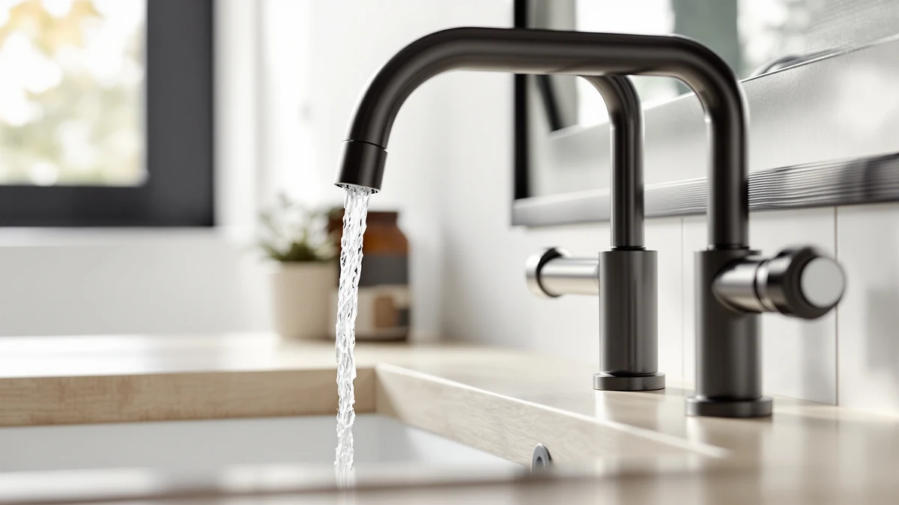

Best Faucet Finishes Guide (2026) | Best Bathroom Faucets
Prices and picks verified as of September 2026. Independent, reader-supported reviews.


Things to Know Before You Buy
- Upkeep varies a lot by finish. Brushed nickel hides fingerprints and water spots, chrome shines but shows every drip, and matte black demands the most frequent wiping.
- The coating matters more than the color. A PVD-coated finish resists scratches and corrosion for years, while a cheap electroplated one can flake or discolor.
- Match within a fixture, not across the whole room. Keep the faucet, drain, and handles in one finish, then you can add a second finish elsewhere without clashing.
- Your water decides some of this. Hard water leaves mineral spots that show up worst on dark and glossy finishes and least on brushed metals.
- Budget follows the finish. Chrome and brushed nickel cost the least, while brass, bronze, and matte black usually carry a premium.
The finish is the one faucet decision you live with every day, and most people pick it last, in a hurry, staring at a wall of swatches. It sets the tone of the whole bathroom and decides how much you wipe, and it drives a real chunk of the price. Get it right and the room feels finished. Get it wrong and you notice the spots every morning.
The good news is that only a handful of finishes cover most bathrooms: polished chrome, brushed nickel, matte black, brass and gold tones, and oil-rubbed bronze. Each one trades looks against upkeep in a predictable way, so once you know how they behave you can match a finish to your habits instead of guessing. If you hate cleaning, that alone rules out two of them.
This guide covers how each finish looks and ages, how the coating underneath affects durability, how to match one to your water and your decor, the mistakes that lead to a mismatched bathroom, and how to keep any finish looking new. Read it once and you will shop with a shortlist instead of a headache.
What You Need to Know
A finish is two things at once: a color and a coating. The color is what you shop for, but the coating decides how the faucet holds up. Start with the coating, because a good-looking color over a weak coating scratches and dulls within a year. The metal underneath is usually brass or zinc alloy, and the finish is the thin layer that protects it and gives it a look.
Two coating methods dominate. Electroplating deposits a thin metallic layer through an electric current, and it costs less but wears faster, so edges can flake or discolor over time. Physical vapor deposition, or PVD, fuses the finish to the metal in a vacuum chamber, which produces a much harder, scratch-resistant surface. When a listing says PVD or advertises a lifetime finish warranty, you are looking at the durable option.
Finishes also split into glossy and satin. Glossy finishes like polished chrome reflect light and show every fingerprint and water spot. Satin or brushed finishes scatter light, which hides smudges and softens the look. That single difference explains most of the daily-upkeep gap between two faucets that cost the same. Before you fall for a color, check the coating method and whether it reads glossy or brushed, since those two facts predict how the faucet will look after a year of real use.
Types and Categories
Five faucet finishes cover the vast majority of bathrooms, and each one earns its place for a different reason.
Polished chrome is the default: bright, mirror-like, and the cheapest to produce. It suits almost any style and cleans up in seconds, but it shows water spots and fingerprints the instant it dries. Brushed nickel has a warm, satin gray tone that hides smudges and spots better than anything else, which makes it the low-maintenance favorite for busy family bathrooms.
Matte black is the bold modern choice. It anchors a contemporary or industrial room and looks striking against white counters, but it shows dust, dried water, and toothpaste splatter, so you wipe it often. Brass and gold tones, including brushed brass and champagne bronze, bring warmth and an upscale feel that pairs well with both modern and traditional rooms, usually at a higher price. Oil-rubbed bronze is a dark, warm brown with hand-rubbed highlights that fits rustic, farmhouse, and traditional bathrooms; it is designed to develop a patina over time, which some owners love and others find inconsistent.
You will also see stainless steel, which looks close to brushed nickel but slightly cooler and more silver, and specialty finishes like polished nickel or brushed gold that command a premium. The split is simple: brushed and satin surfaces forgive daily mess, while glossy and dark surfaces give you a stronger look and ask for more wiping in return.
How to Choose
Work through four questions and the right finish almost picks itself.
Start with how much you clean. If you wipe your bathroom daily and enjoy a spotless shine, chrome rewards you. If you want a fixture that looks clean between weekend cleanings, choose brushed nickel or brushed brass. Skip matte black and polished chrome if hard water and a busy schedule are your reality, because you will see every spot.
Look at what is already in the room. Pull the finish of your cabinet pulls, towel bars, light fixtures, and shower trim. You want the faucet to agree with at least the plumbing fixtures near it. Warm finishes like brass and bronze suit cream, wood, and beige palettes; cool finishes like chrome and nickel suit white, gray, and blue palettes.
Factor in your water. Hard water leaves chalky mineral deposits, and those show up worst on matte black and glossy chrome. Brushed nickel and stainless steel disguise them best, so in a hard-water home they save you real scrubbing time.
Set a finish budget. Chrome and brushed nickel sit at the low end, matte black and brushed brass cost more, and specialty finishes like polished nickel run highest. Within any color, spend up for a PVD or lifetime-warranty coating rather than a bargain electroplated one, since the coating decides whether the faucet still looks good in three years.
One more practical rule: buy the faucet, drain, and any matching handles together in the same finish and the same brand line when you can. Finishes vary slightly between manufacturers, so a nickel from one maker rarely matches a nickel from another. Choosing a finish is easier when you treat the fixture as a set instead of separate parts.
Common Mistakes to Avoid
A few predictable errors turn a good finish into a daily regret.
Chasing a trend you will not maintain. Matte black looks great in photos, so people buy it without thinking about the wiping it demands in a hard-water bathroom. Match the finish to your cleaning habits, not to a showroom photo.
Judging a finish from a phone screen. Screen color shifts warm or cool depending on the display, and champagne bronze can look like plain gold online. Order a sample or check the finish in person before you commit a whole bathroom to it.
Assuming every brand's nickel is the same nickel. One maker's brushed nickel can be grayer, another's warmer. If you want the faucet and drain to match, buy them from the same product line rather than trusting the label.
Ignoring the coating to save a few dollars. A cheap electroplated finish looks identical on day one and then flakes at the edges within a year. Paying for a PVD coating is the difference between a faucet that ages well and one you replace early.
Forcing everything to match perfectly. An all-one-metal bathroom can look flat and dated. Keep each fixture internally consistent, then mix a second finish in the hardware or lighting for depth.
Care and Maintenance
Every one of these finishes stays looking new with the same gentle routine, and the routine matters more than the finish you chose. Wipe the faucet with a soft microfiber cloth and warm water, then dry it. Drying is the step most people skip, and it is what prevents the water spots that make a fixture look dirty.
For a weekly clean, use a drop of mild dish soap in warm water, wipe, rinse, and dry. Skip anything abrasive: no scouring pads, no powdered cleansers, and no bleach or ammonia-based sprays, since those strip and dull a finish over time. Matte black and oil-rubbed bronze are the most sensitive, so keep harsh chemicals away from them.
Hard-water buildup calls for a careful touch. Lay a cloth soaked in equal parts white vinegar and water over the spotted area for a few minutes, then wipe and rinse. Do not leave vinegar sitting on the finish for long, and never soak brass, bronze, or matte black, because acid can etch them. Chrome and stainless steel tolerate the vinegar trick best.
Two habits extend any finish. Keep toothpaste, soap, and skincare products from drying on the metal, and run a bathroom fan to cut the humidity that speeds up spotting and corrosion. Do that and a quality faucet holds its finish for a decade of daily use.
Our Top Picks
Choosing a finish is easier when you can see it on real hardware, so here are three picks that show how finish and coating play out at different budgets. One lets you refresh a faucet you already own, one is a low-cost upgrade, and one is a full fixture with a fingerprint-resistant finish.

Editor’s Pick
4Pcs Bathroom Faucet Aerator Replacement
Swapping the aerator refreshes a tired faucet tip and keeps the finish consistent for a few dollars, a smart fix before you spend on a whole new fixture.
$7.45
Check Price on Amazon
Best Value
Patented CECEFIN 1080°Swivel Faucet-Extender Sink-Aerator
This swiveling extender widens the stream and adds reach, an easy low-cost way to modernize a sink and test a look before you commit to a new finish.
$16.14
Check Price on Amazon
Premium Choice
Pfister Willa Bathroom Sink Faucet
The Pfister Willa shows what a spot-resistant finish buys you: a modern single-hole faucet that stays looking clean between wipe-downs, ideal for a busy bathroom.
$59.48
Check Price on AmazonFrequently Asked Questions
Which faucet finish is the easiest to keep clean?
Brushed nickel hides water spots and fingerprints better than any other common finish, so it looks clean between wipe-downs. Polished chrome cleans up fast with a quick buff but shows spots the moment it dries. Matte black looks great but shows dried mineral residue and dust the most, especially in hard-water homes.
Do my faucet, showerhead, and hardware finishes all have to match?
You do not have to match every metal in the room, but the finishes on one fixture should agree. Keep the sink faucet, drain, and handles in the same finish, then feel free to mix a second finish elsewhere, such as brushed nickel plumbing fixtures with matte black cabinet pulls. Sticking to two finishes total keeps the room from looking busy.
Does the finish affect how long a faucet lasts?
The finish protects the metal underneath, so a durable coating matters. PVD finishes bond at a molecular level and resist scratches and corrosion for years, while cheaper electroplated coatings can flake or discolor over time. Chrome and PVD brushed nickel hold up best. Oil-rubbed bronze is meant to age and patina, which some buyers want and others do not.
Is matte black a good choice if I have hard water?
Matte black is the finish that shows hard-water spots most clearly, so it asks for more frequent wiping in homes with mineral-heavy water. You can still choose it if you like the look and keep a microfiber cloth handy, but if low maintenance is your priority, brushed nickel or stainless steel disguise mineral deposits far better.
Are brushed and satin finishes the same thing?
In practice, yes. Brushed, satin, and matte-metal descriptions all refer to a finish that scatters light instead of reflecting it, which is what hides fingerprints and smudges. The opposite is a polished or glossy finish like chrome, which is mirror-bright and shows every mark. When a listing says brushed or satin, expect the lower-maintenance surface.
Verdict
There is no single best finish, only the best finish for your habits, your water, and your decor. If you want the lowest upkeep, brushed nickel hides spots and fingerprints and forgives a busy schedule. If you love a bright, classic shine and do not mind a quick daily wipe, polished chrome costs the least and suits almost any room. Matte black and brass reward you with a bolder, warmer look in exchange for more attention. Whatever color you land on, spend up for a PVD or lifetime-warranty coating, since the coating decides whether the faucet still looks good in three years. When you are ready to see a spot-resistant finish on a full fixture, the Pfister Willa is a strong place to start, and its finish stays clean between cleanings. Match the finish within each fixture, keep to two finishes across the room, and the result looks intentional instead of accidental.